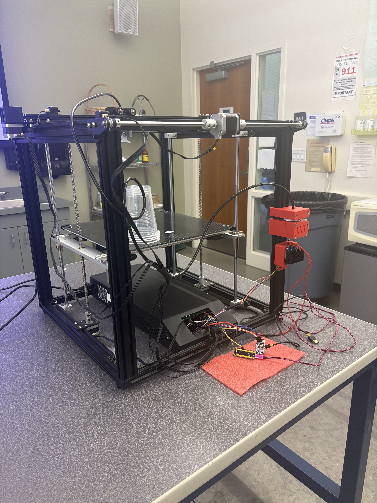

- Generated by
 1.17.0
1.17.0
For our Term Project we developed a gantry-style robot capable of grabbing and stacking cups using a vacuum and suction cup attachment. The system was built using a modified Ender-series 3D printer frame, allowing our team to use an existing three-axis gantry while designing custom electronics and firmware to control the machine. Our final system consists of a mechanical gantry structure, a custom STM32-based control PCB, and firmware that is responsible for homing, motion planning, and actuator control. With our stepper motor control, the robot is capable of repeatable positioning and object manipulation tasks. Throughout the development and testing of our robot system, our team encountered challenges with the PCB design — especially with power distribution and the vacuum motor current — which are highlighted in more detail throughout this portfolio.
